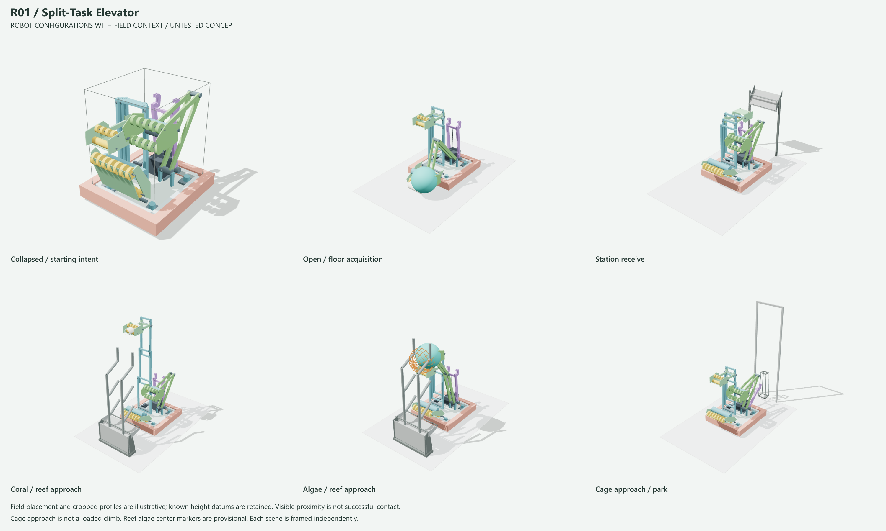
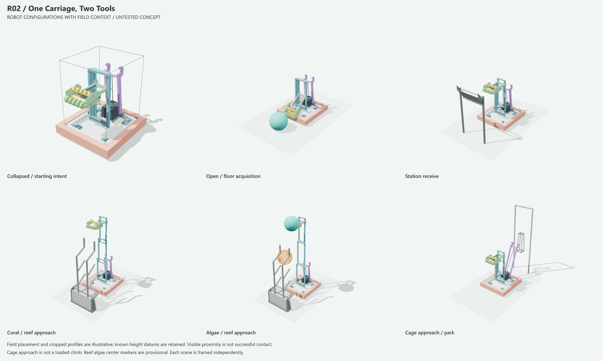
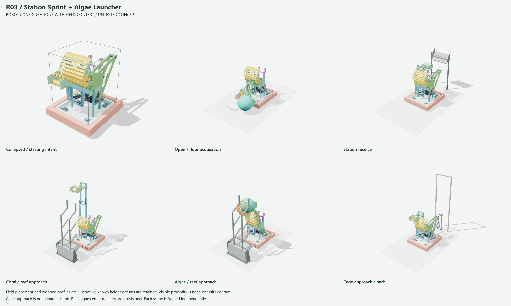
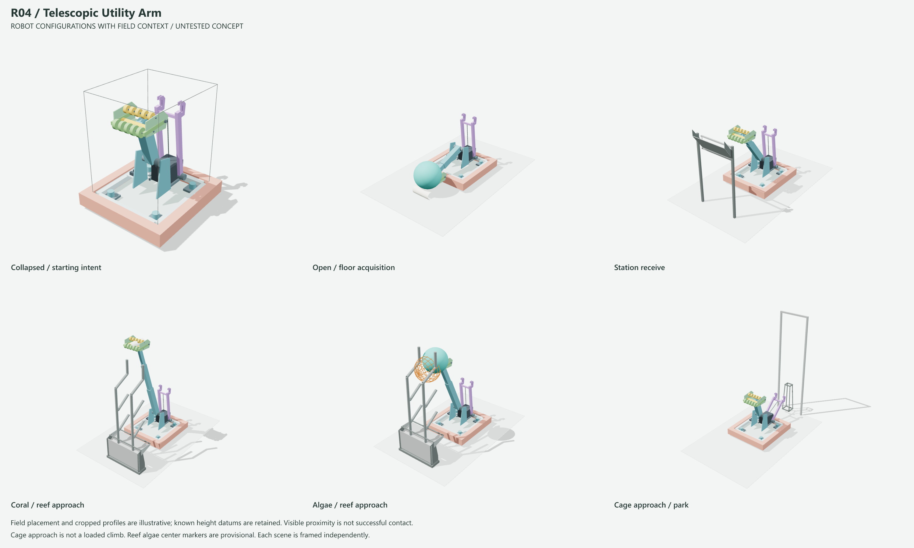
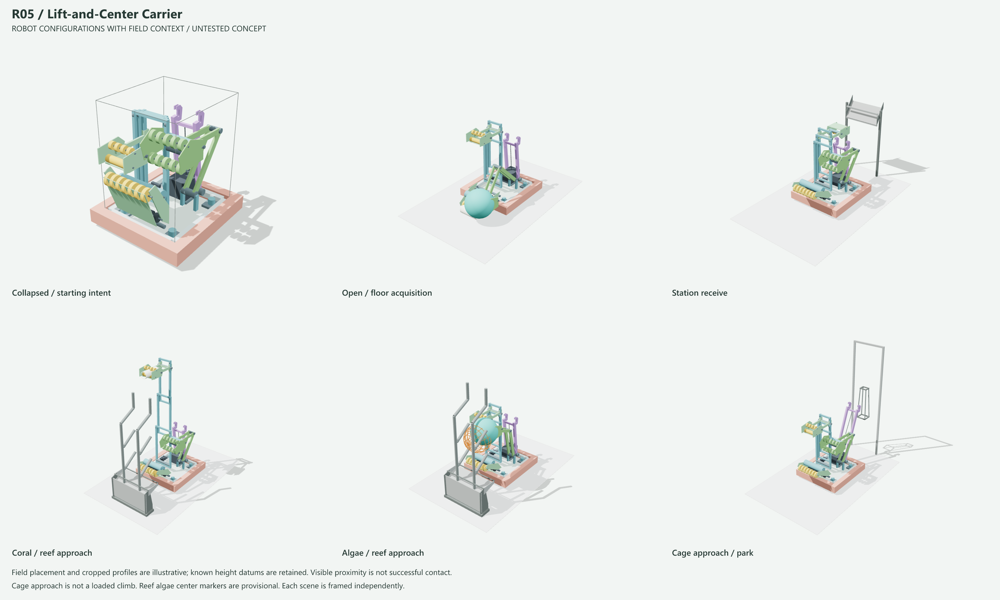
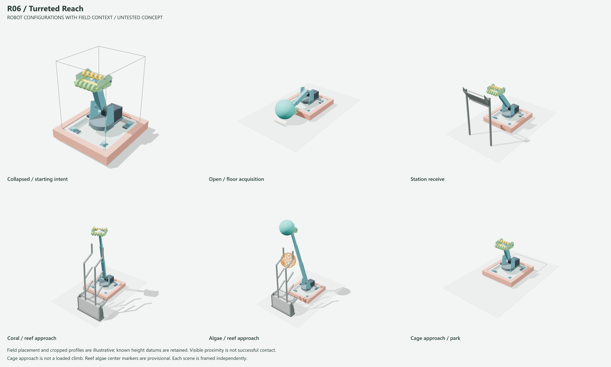
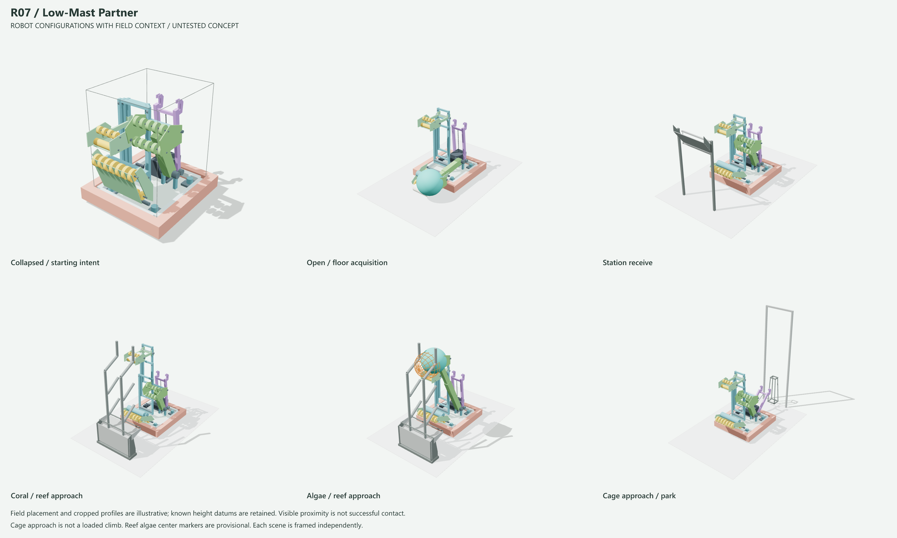
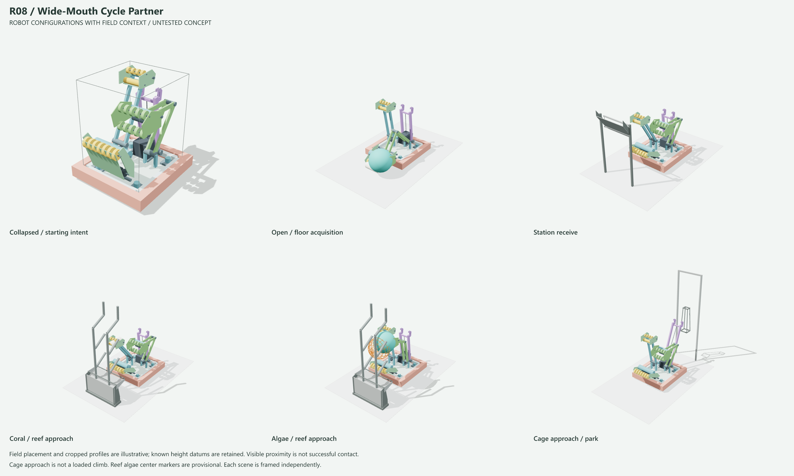
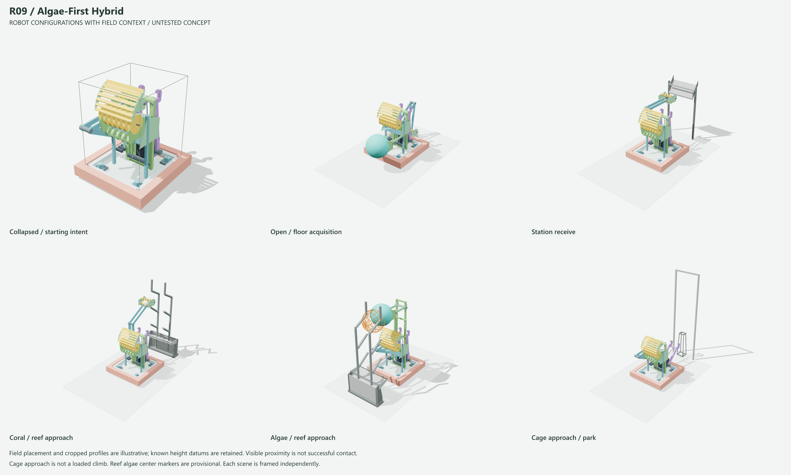
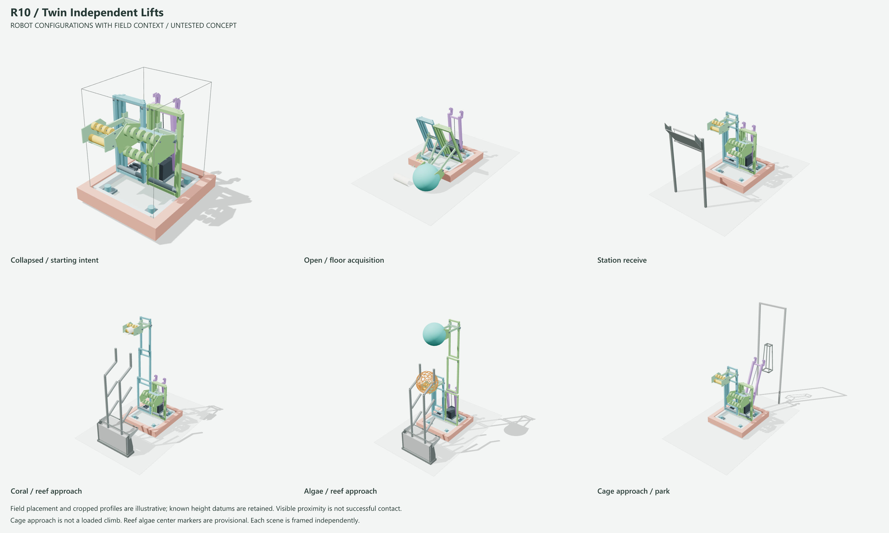

Interactive robot viewer | Intake state viewer + original 2D flows
Illustrative approaches, not verified interaction or legal stow. Field heights are sourced where available; unspecified profiles and algae center markers remain provisional.









